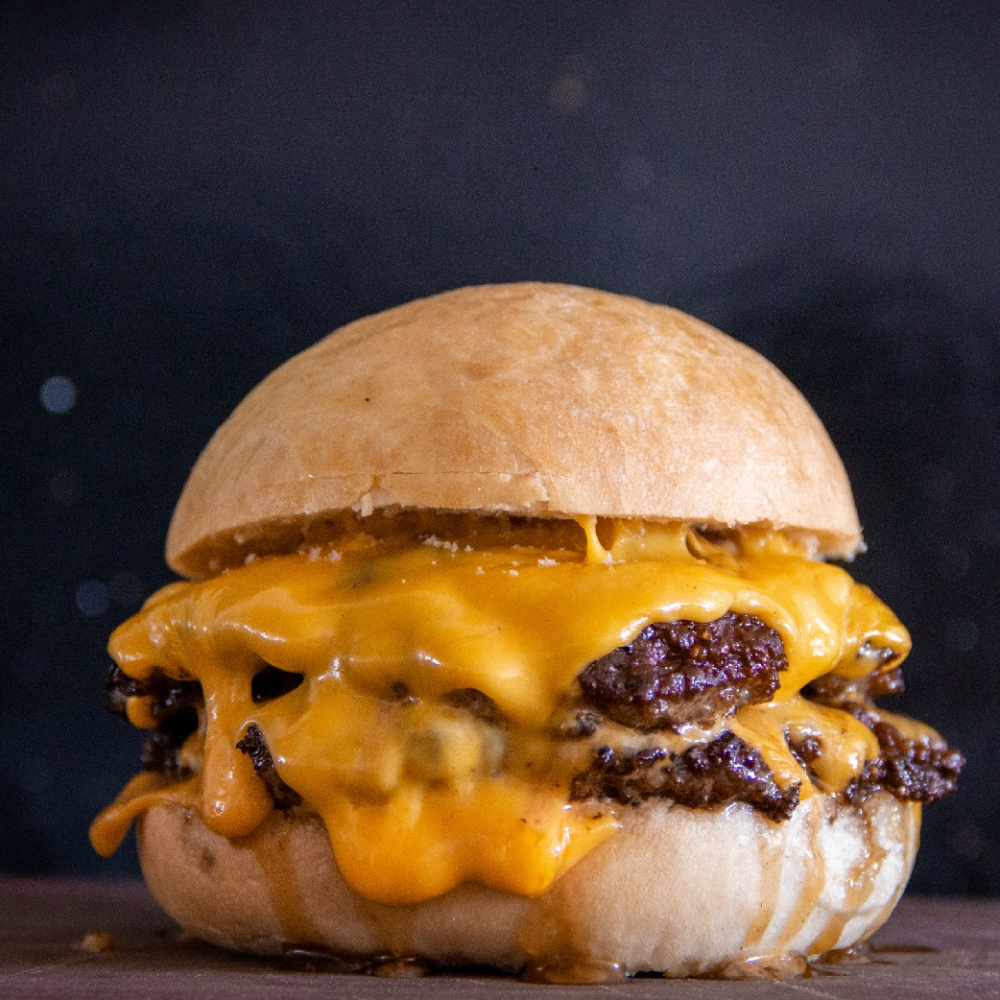

Home
How to make a cheeseburger

Description
This is one of our best recipes, the best of the best, the crème de la crème !
And here with us you will learn how to combine the ingredients, cook them and to serve it.
Lets start with the:
Ingredients
- Regular Bun
- Ground meat
- Eggs
- Onios
- Garlic
- Salt and pepper
- Pasteurized process American cheese
- Ketchup
- Mayonnaise
- Onios (optional)
- Pickle slices (optional)
Steps
- Place the ground meat in a bowl
- Chop the onios and garlic in small pieces
- Add and egg, onions and garlic in the bowl where the ground meat is
- Season the ingredients with salt and pepper and mix everything together
- Create the burgers
- Shape the mixture into 6 equal-sized balls using yous hands
- Press the balls down to make flat burger shapes about half inch (1.27cm) thick
- Arrange the burgers on a plate
- Choose your cooking method
- Brolier or grill
- Fried in the skillet or frying pan
- Barbecued
- While the burgers are cooking, prepare the toppings
- Once the burgers are done, place the bun on the plate, add the burger, the toppings and enjoy!